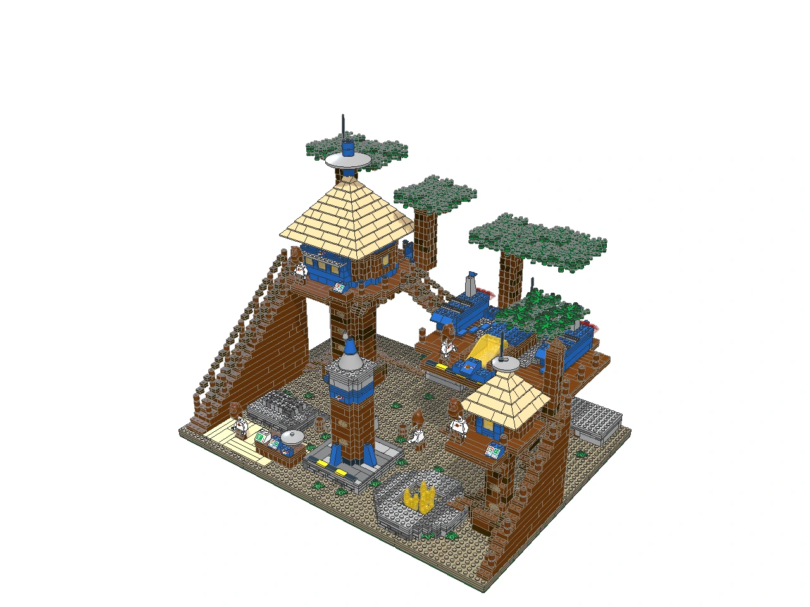

Original · creative

Yub-Nub 1978: Moonwood Space Village
3,294 parts · 2 compiler warnings
Compiler report
E · Lego-style

Moonbranch Outpost — Ewok Classic Space
3,278 parts · 30 compiler warnings
Compiler report
Updated · Diorama

LL-979 • The Moonwood Treeport
2,955 parts · 12 compiler warnings
Compiler report ·
Source ·
Exact input